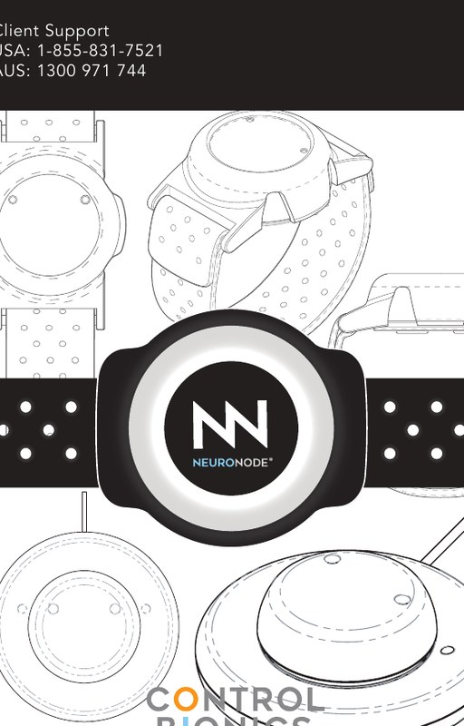

What can we help you with?
Choose a product, follow a visual support guide, or ask Nero to point you to the right instructions.
 +
+

Choose your product
Each product has its own setup, troubleshooting and visual walkthroughs.
NeuroStrip
Setup, skin preparation, placement, protocols, sessions, measurements, troubleshooting and dysphagia.
Open NeuroStrip support → AAC + EMG / SPATIAL ACCESSNeuroNode
Quick start, placement, Bluetooth, signal indicators, Controller App, Grid 3, calibration and troubleshooting.
Open NeuroNode support → Nero
NeuroStrip support
Nero
NeuroStrip support
 Nodi
NeuroNode + AAC support
Nodi
NeuroNode + AAC support
The right mascot follows the right product
When you are in NeuroStrip content, Nero is your guide. When you move into NeuroNode or AAC content, the assistant automatically changes to Nodi.
NeuroStrip
Visual instructions for setup, sEMG placement, app workflows, protocols, sessions and data review.
Choose your pathway
NeuroStrip Get Help guides
NeuroNode
Simple frontline guidance first, with the detailed NeuroNode User Guide available inside each relevant walkthrough.
Quick Start by system
NeuroNode Get Help guides
Quick fixes
Start here for the most common frontline issues.
Ask Nero
Ask a plain-English question. Nero handles NeuroStrip content, while Nodi handles NeuroNode and AAC content.
Contact Control Bionics Support
If the documented steps do not resolve the issue, escalate to Support.